1. What Azure Files is
Azure Files is a managed file share in the cloud. You mount it with the SMB or NFS client already built into Windows, Linux and macOS, and applications read and write it like any network drive. Several machines can mount the same share at the same time, in Azure or on-premises.
| Blob Storage | Azure Files | |
|---|---|---|
| Access | HTTPS API and tools such as AzCopy | Mounted as a drive or directory |
| Structure | Flat, with names that look like folders | Real folders, file locking, permissions |
| Best for | Backups, media, logs, data lakes | Shared application files, home folders, apps that expect a file path |
2. The choices you make
Protocol
| SMB | NFS | |
|---|---|---|
| Clients | Windows, Linux, macOS | Linux |
| Storage tier | HDD or SSD | SSD only |
| Authentication | Storage account key, or identity-based with Active Directory or Microsoft Entra | None; access is controlled by network rules |
| Linux permissions | Set once at mount time | Real POSIX owners and modes |
| Port | TCP 445 | TCP 2049 |
A share uses one protocol, never both. SMB and NFS shares can sit side by side in the same storage account.
Media tier
- HDD (standard) lives in an ordinary general-purpose v2 storage account and is the low-cost option.
- SSD (premium) needs a FileStorage account and gives single-digit millisecond latency. It is also the only tier that supports NFS.
Billing model
- Provisioned v2 lets you set storage, IOPS and throughput separately. Microsoft recommends it for new deployments.
- Provisioned v1 is the older SSD model. You choose the size, and IOPS and throughput grow with it.
- Pay-as-you-go charges for data stored and each transaction. HDD only.
With either provisioned model you pay for the size you provision, not the amount you use.
Classic file shares or file shares
The portal now labels shares inside a storage account as classic file shares. A newer resource type, simply called file shares, can be deployed straight into a resource group without a storage account, but for now it supports NFS only. Classic shares support everything, so that is what this lab uses.
3. Lab setup
| Item | Value |
|---|---|
| Resource group | scslabs-rg, West US 3 |
| Storage account | scslabstore01, Azure Files, SSD (premium), LRS |
| Share | scssmb, SMB, 100 GiB |
| Client | scsubtusrv01, Ubuntu |
4. Part 1: Create a premium storage account
Step 1Basics
Create a storage account and choose Azure Files as the primary service. That reveals the media tier and billing options.
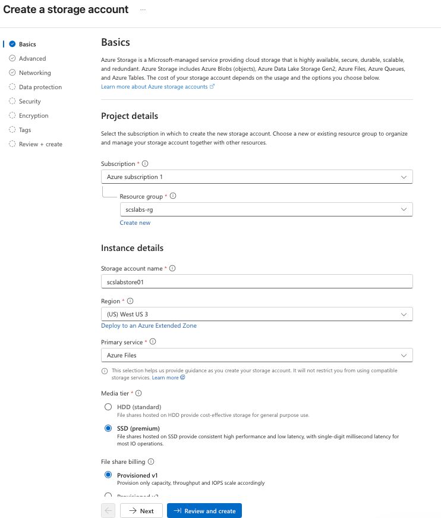
I picked SSD so the same account could hold an NFS share later. I chose provisioned v1; provisioned v2, the next option down, is the recommended model for new accounts and allows a smaller minimum size.
Step 2Advanced
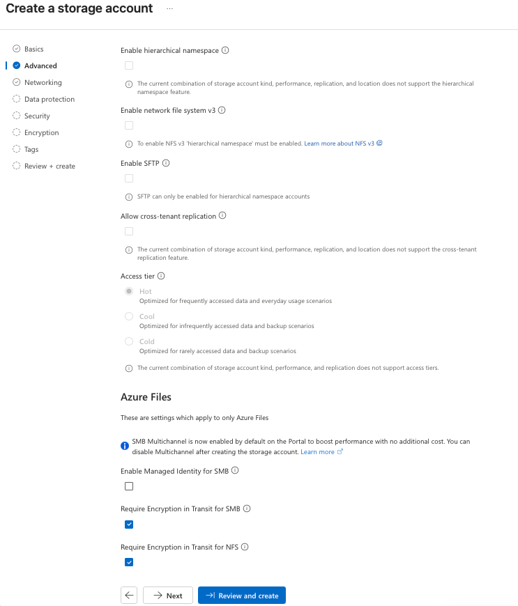
The "Enable network file system v3" box here is about NFS for Blob Storage, not Azure Files. NFS for file shares is chosen per share later.
Step 3Networking
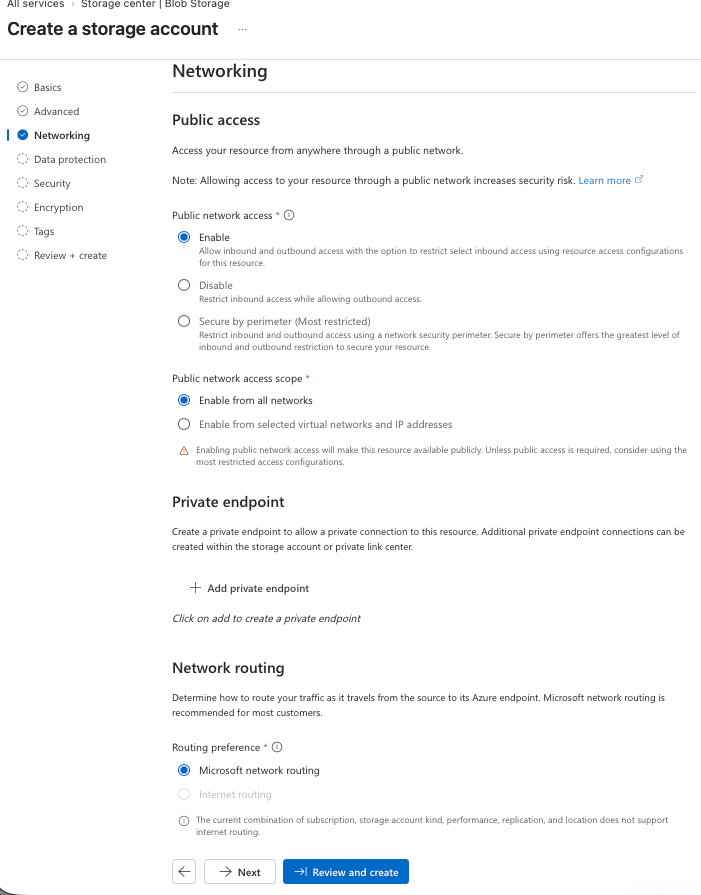
Step 4Data protection, security and encryption
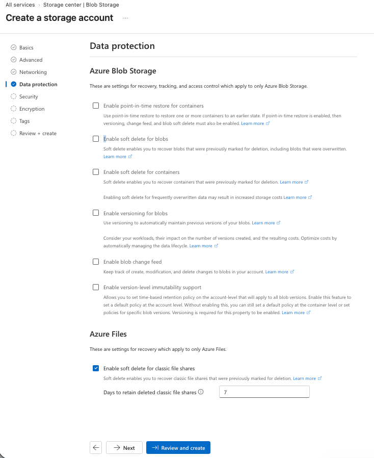
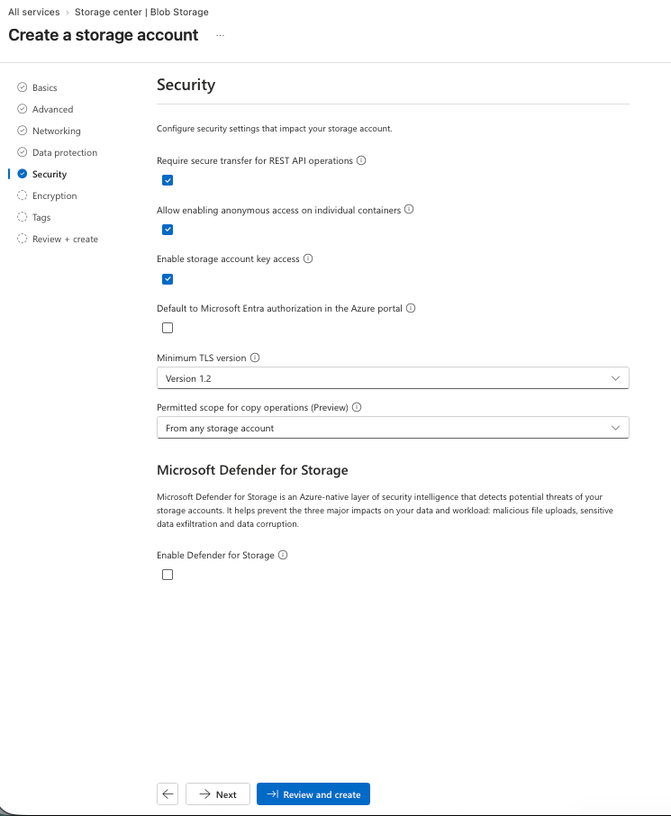
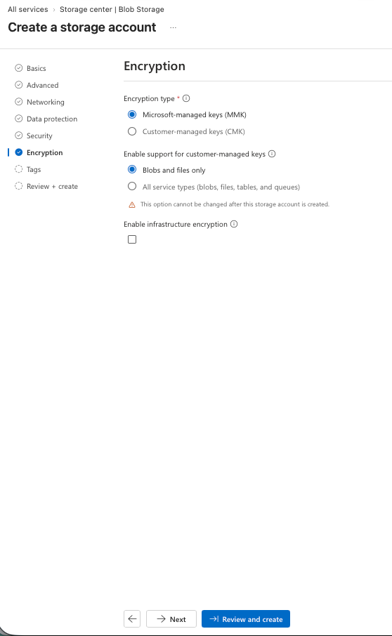
5. Part 2: Create the SMB share
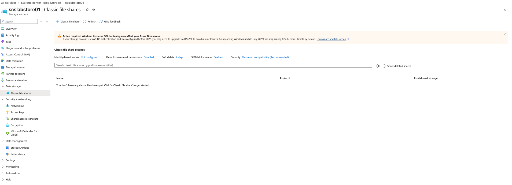
Step 5Name, size and protocol
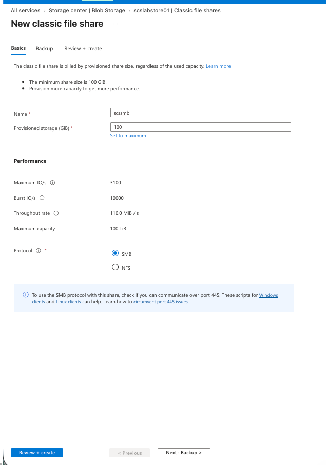
Step 6Backup
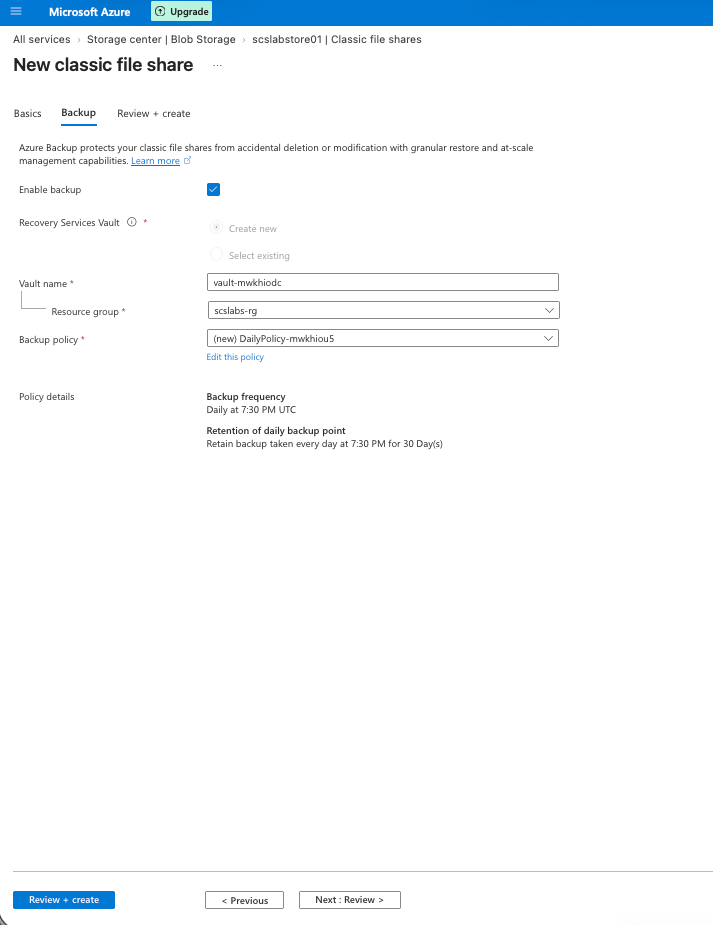
Azure Backup is the right choice for real data, but the vault and its backups are billed separately. For a lab, untick it. The share overview below shows backup as not configured.
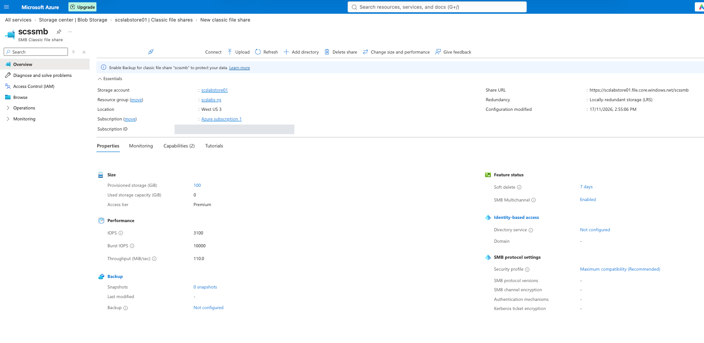
https://scslabstore01.file.core.windows.net/scssmb.6. Part 3: Mount it on Linux
Step 7Find the key and the mount script
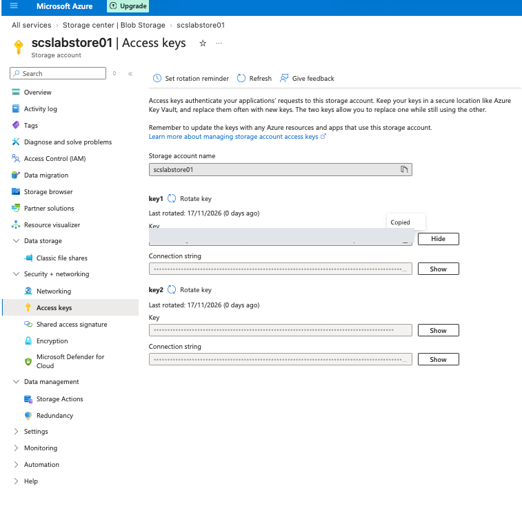
You rarely need to copy the key yourself. The share's Connect button builds a complete Linux script with the key already in it.
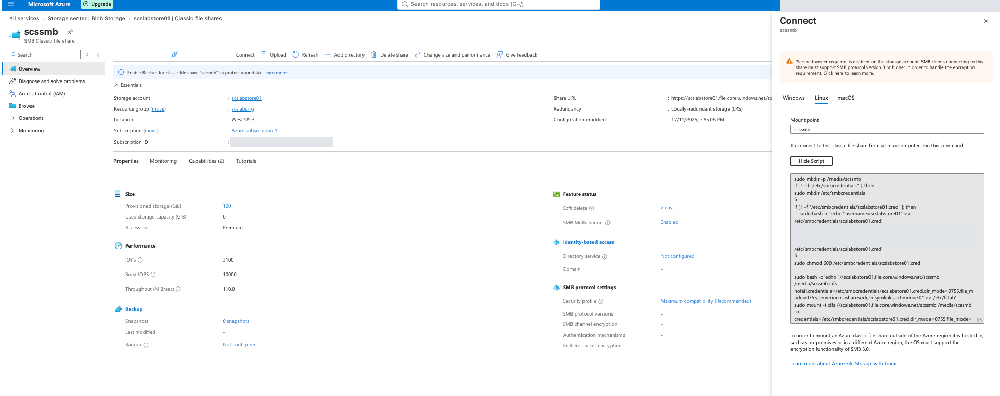
/etc/fstab line, and mounts the share.Step 8Check port 445 and the SMB client
nc -zv scslabstore01.file.core.windows.net 445
sudo apt update && sudo apt install -y cifs-utils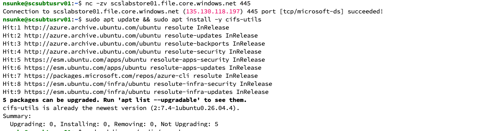
cifs-utils is already installed.Many home and office internet providers block port 445. From an Azure VM it is open, but test it before blaming anything else.
Step 9Run the script
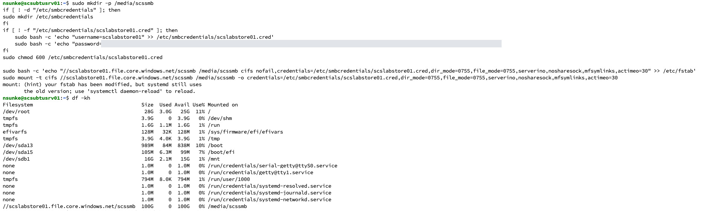
/media/scssmb and df shows its 100 GiB.The mount: (hint) message is not an error. The script edited /etc/fstab, and systemd wants to reload it: run sudo systemctl daemon-reload.
7. Part 4: Permission denied, and the fix
The problem
The share mounted, but my normal user could not create a file. With sudo it worked. Changing ownership or modes silently did nothing.
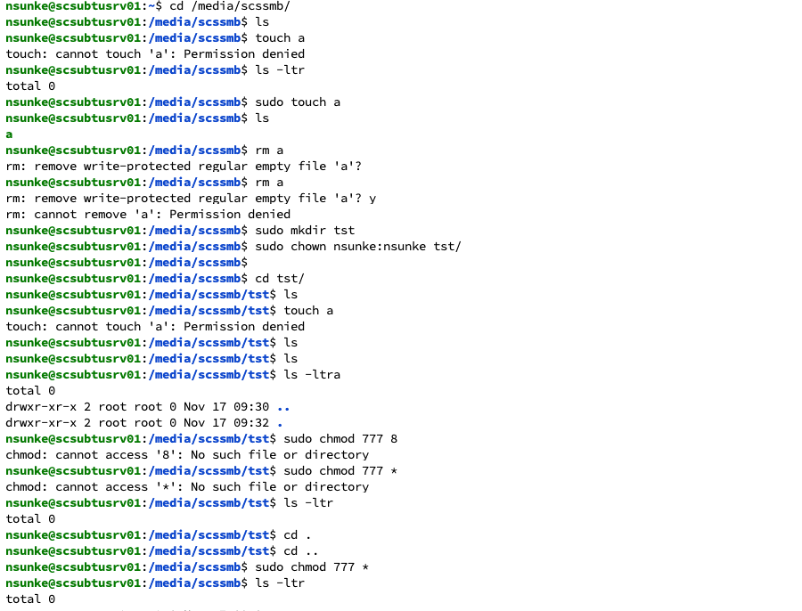
touch fails, sudo touch works, and chown leaves the folder owned by root.Why it happens
An SMB share does not store Linux owners and permission bits. The Linux client invents them for every file from the mount options. The portal's script mounts with:
dir_mode=0755,file_mode=0755and no owner, so the client shows every file as owned by root with mode 755. Only root can write. chown and chmod cannot change this, because there is nowhere on the share to save the result.
The fix
Tell the client which user should appear to own the files, by adding uid and gid:
sudo umount /media/scssmb
sudo mount -t cifs //scslabstore01.file.core.windows.net/scssmb /media/scssmb \
-o credentials=/etc/smbcredentials/scslabstore01.cred,uid=$(id -u),gid=$(id -g),dir_mode=0755,file_mode=0644,serverino,nosharesock,mfsymlinks,actimeo=30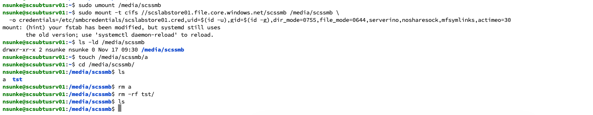
nsunke, and files can be created and removed without sudo.dir_mode=0777,file_mode=0777 instead of uid and gid.
Make it survive a reboot
The portal's script also added an /etc/fstab line with the old options, so the share would come back owned by root after a restart. Edit that line to include uid=1000,gid=1000,dir_mode=0755,file_mode=0644 (check your IDs with id), then test it:
sudo systemctl daemon-reload
sudo umount /media/scssmb && sudo mount -a
ls -ld /media/scssmbRepeat the mount on a second VM, write a file on one and read it on the other, and you have shared storage for both.
8. Adding an NFS share
The account is SSD, so an NFS share can go in the same account. I have not captured screenshots for this part.
- Restrict the network. In Security + networking → Networking, choose Enable from selected virtual networks and IP addresses and add the subnets of the VMs that will mount the share. NFS has no password, so this is its access control.
- Create the share. Add a classic file share named
scsnfs, set the protocol to NFS, and choose No root squash for a lab. - Mount it. Open the share and click Connect. Because encryption in transit is required for NFS on this account, the page gives commands for Microsoft's
aznfsmount helper. Use them as shown. The mount path has the formscslabstore01.file.core.windows.net:/scslabstore01/scsnfs.
Then try the test that failed on SMB:
sudo mkdir /media/scsnfs/test
sudo chown nsunke:nsunke /media/scsnfs/test
ls -ld /media/scsnfs/test # really owned by nsunkeOn NFS, ownership and permissions are stored on the share, so chown takes effect and every client sees the same owner.
9. Troubleshooting
| Symptom | Cause | Fix |
|---|---|---|
| SMB: permission denied as a normal user | Mounted without uid and gid, so files appear owned by root | Remount with uid, gid or wider modes |
SMB: chown or chmod has no effect | SMB does not store Linux ownership | Set ownership through mount options |
SMB: mount error(13): Permission denied | Wrong key, or key access disabled on the account | Check the credentials file and the account's key access setting |
| SMB: mount times out | Port 445 blocked | Test with nc -zv ... 445; mount from an Azure VM or over VPN |
mount: (hint) your fstab has been modified | systemd has not reloaded fstab | sudo systemctl daemon-reload |
| Share comes back owned by root after reboot | The fstab line still has the old options | Add uid and gid to the fstab line |
| NFS: access denied by server | The VM's subnet is not allowed on the account | Add the subnet under Networking |
| NFS: mount hangs | Encryption in transit required, but plain nfs was used | Use the aznfs commands from the Connect page |
10. Best practices
- Protect the storage account key. It gives full control of the account. Keep it only in a root-readable credentials file, never in scripts or screenshots, and rotate it if it is ever exposed. The Connect script also leaves the key in your shell history.
- Prefer identity-based access for SMB where you can, using Active Directory or Microsoft Entra, so users sign in as themselves instead of sharing the key.
- Restrict the network. Use selected networks or a private endpoint, especially for NFS.
- Keep encryption in transit required. It needs SMB 3 or later, which every current Linux client supports.
- Set ownership at mount time for SMB on Linux, and write the same options to fstab.
- Use
nofailin fstab so the VM still boots if the share is unreachable. - Turn on soft delete and snapshots, and Azure Backup for data that matters.
- Size deliberately. Provisioned shares bill for their full size; provisioned v2 lets you choose capacity, IOPS and throughput separately.
- Use the right storage for databases. File shares suit dumps, exports and scripts. Database data files belong on managed disks.
11. Cost and clean-up
A provisioned share is billed for its full size every hour, used or not. This 100 GiB SSD share costs far more than a few files in Blob Storage, so delete it when the lab is over.
# On each VM
sudo umount /media/scssmb
sudo sed -i '/scslabstore01.file.core.windows.net/d' /etc/fstab
sudo rm -f /etc/smbcredentials/scslabstore01.credThen delete the share, or the whole storage account, in the portal. Soft delete keeps a deleted share for 7 days, so it may still be billed until that period ends.
Key takeaways
- Azure Files gives several machines one shared folder, mounted with ordinary SMB or NFS clients.
- NFS needs SSD and relies on network rules; SMB works on HDD or SSD and signs in with a key or an identity.
- On Linux, an SMB share has no real owners. The mount options decide who can write.
- The portal's mount script mounts as root only. Add
uidandgid, and update fstab to match. - Provisioned shares bill for what you provision, so size them carefully and delete lab shares promptly.